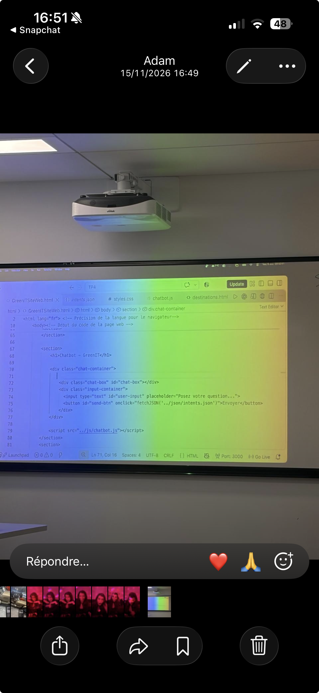

Afrique du Sud
Période du voyage : [mois et année]
Description du pays (Afrique du Sud).
Photos



Côte d'Ivoire
Période du voyage : [mois et année]
Description du pays (Côte d'Ivoire).
Photos


Maroc
Période du voyage : [mois et année]
Description du pays (Maroc).
Photos